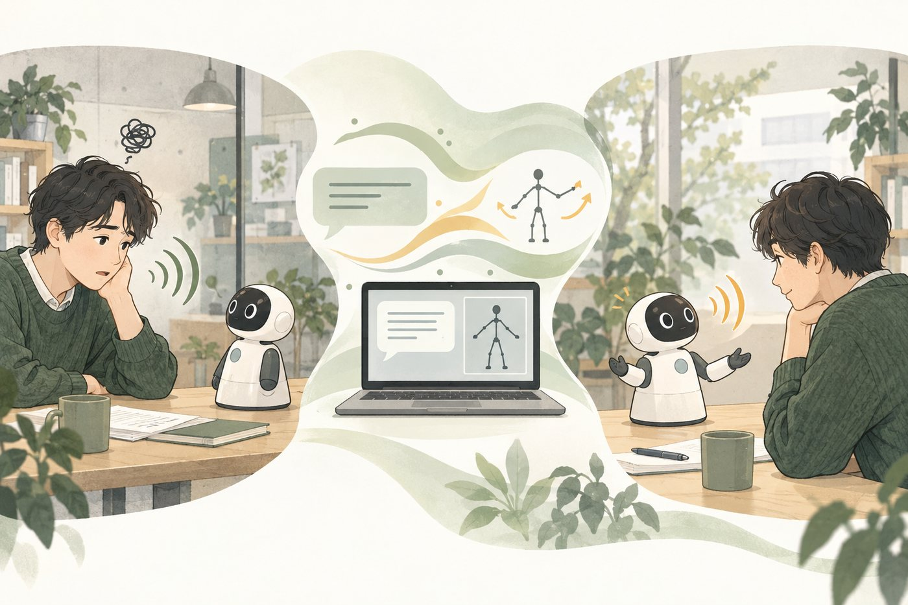
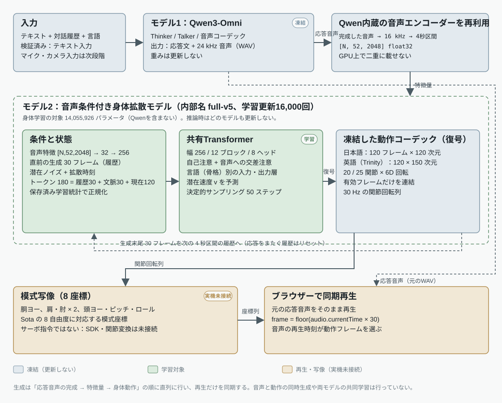
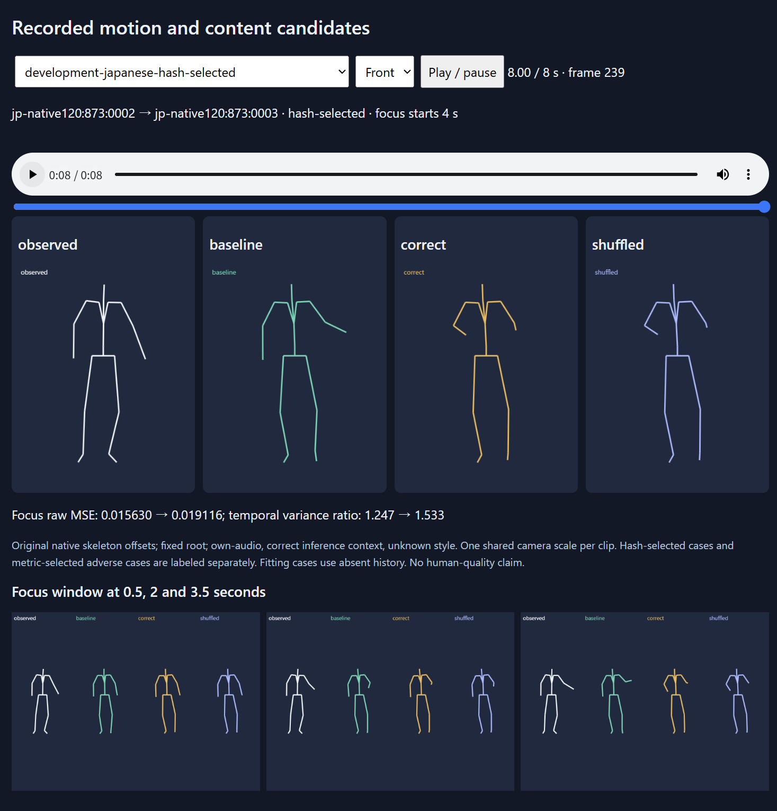
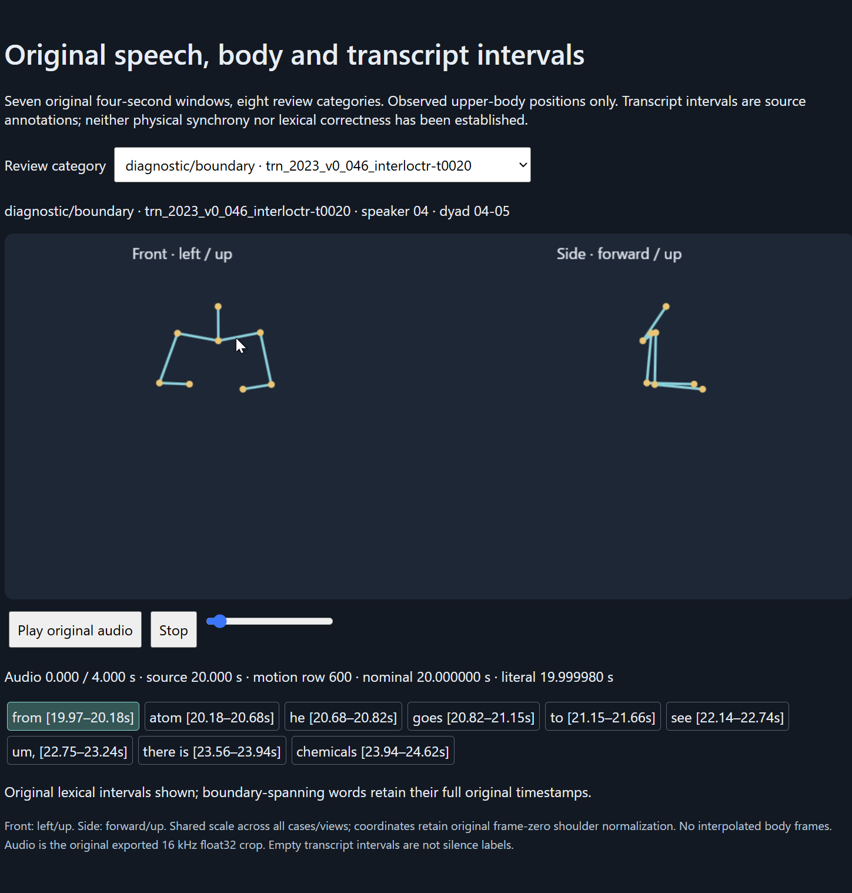

1要旨
- 目的
- 人間の発話と身振りの収録データから学習した身体動作を卓上ロボットSotaに転移し、短い感情的な日常会話において、対話相手の親近感・共感（「聞いてもらえた・理解された」という感覚）が高まるかを検証します。
- 現状
- 凍結したQwen3-Omniが応答文と応答音声を生成し、その音声を条件に身体動作生成モデルが30 Hzの関節回転列を生成する直列構成をソフトウェア上で実装しました。実際の応答4ターン（日本語2・英語2）で、音声と動作の同期再生をブラウザー上で確認しています（送信から再生開始まで2.1〜3.0秒）。
- 根拠の要点
- 検証用データでは、音声を与えない生成より誤差が約14%小さく、音声を別の収録のものに入れ替えると誤差が約10%増えるため、動作は応答音声に反応しています。一方、静止した平均姿勢よりは誤差が大きく、姿勢の反復と動きの少なさが残ります（第6節）。
- 未実施
- Sota実機での動作、音声とモーターの同期、マイク入力、参加者評価。実機のSDK・接続情報の入手待ちのため、実機側の作業は停止しています。
- 第一論文との違い
- 第一論文（ICIC 2024）はLLMの感情スコアと人手設計の動作規則で身体表現を作りました。本研究は動作そのものを人間の収録データから学習します。
2研究課題と位置づけ
研究の問い：人間の発話・身振りの収録データから学習した身体動作を、対話モデルの応答音声に同期させてSotaで提示すると、短い感情的な日常会話において「聞いてもらえた・理解された」という感覚（親近感・共感）は高まるか。
- H1（動作の有無）：同一の応答音声のもとで、学習動作ありは初期姿勢の維持よりも、動作の適合・理解された感覚・会話継続意欲の評定が高い。
- H2（学習 対 人手設計）：学習動作は、第一論文方式（Laban理論に基づく人手設計の規則動作）を再実装した対照と比べて同等以上である。優位性は仮説であり、未検証です。
主要指標の候補は「ロボットに理解されたと感じた」という参加者自身の評定で、自然さ・人間らしさ・応答の適切さは副次指標です。項目・尺度・人数は本評価の前に固定します（第5節）。
想定する貢献：(a) 凍結した対話・音声基盤モデルの応答音声から学習身体動作を生成し、8自由度の卓上ロボットへ写像する再現可能な方式、(b) 日本語（副次的に英語）の短い感情会話での実機動作、(c) 「動作を加える効果」と「学習方式の効果」を分けて測る参加者実験の証拠。
第一論文からの継続
| 第一論文（Qiang et al., ICIC 2024） | 本研究 | |
|---|---|---|
| 対話 | GPT-3.5 + 音声認識・音声合成ライブラリ | Qwen3-Omni 1モデルで音声理解・応答・音声生成（重みは凍結） |
| 身体動作 | LLMが出す4感情スコア → Laban理論に基づく人手設計の動作規則 | 人間の音声・動作データから学習した拡散モデル（応答音声で条件付け） |
| 評価 | 認識率、動画印象、5ターン対話の印象（Godspeed等） | 同一音声での統制比較（動作あり／静止／人手設計）＋短い実対話での親近感・共感 |
関連研究との違い
音声と全身動作を一つのモデルで共同生成するMotion-Omni（arXiv:2609.04250）や、日本語の全二重対話モデルに動作トークンを加えたHAIシンポジウム2026の報告に対し、本方式は完成した応答音声を別モデルへ入力する直列（カスケード）構成で、その出力を低自由度の実機で実行することを前提にしています。同じ「統合」でも意味が異なり、差分と優位性は今後の実装比較と評価で示す必要があります。
研究室の第一論文やPepperを用いた共感対話システム（ICSR+AI 2025; Lee et al., 2026）が人手設計・LLM記述のジェスチャ集合を用いるのに対し、本研究の身体動作は人間の収録データから学習したものです。学習型の音声駆動ジェスチャをヒューマノイドで評価した先行研究（例：Yoon et al., 2019, NAO）とは、(1) 対話モデル自身の応答音声を条件にする、(2) 8自由度の卓上ロボットへ写像する、(3) 日本語の感情的な日常会話で理解された感覚を測る、の3点で異なります。Sotaや日本語であること自体は貢献にならないと考えています。

3進捗の一覧
| 項目 | 状態 | 備考 |
|---|---|---|
| 対話・音声生成（Qwen3-Omni、重み固定） | 完了 | 日本語・英語。応答は1〜2文、乱数種固定で再現可能 |
| 身体動作生成モデルの学習 | 完了 | 3データセット・4秒区間6,056個で学習した v5 を暫定採用（第6節） |
| 応答音声 → 動作生成 → 同期再生（ソフトウェア） | 完了 | 実際の応答4ターン・676フレームで確認。送信→再生開始 2.1〜3.0秒 |
| Sotaの8自由度への写像（模式表示） | 完了 | 模式座標まで。サーボ指令・可動域・符号は実機情報待ち |
| Sota実機の接続・関節制御 | 停止中（依存待ち） | 機体のエディション・SDK・設定・接続方法が未入手 |
| マイク・カメラ入力の統合 | 未着手 | 現在はテキスト入力で検証。発話終了検出も未実装 |
| 発話終了から応答出力までの空白の短縮と計測 | 完了 | ストリーミング化後、収録音声16ターンで発話終了→音声・動作の再生開始 中央値 0.84 秒（発話終了検出0.25秒を含む。改善前 1.91 秒）。第7節 |
| 評価計画の確定 | 進行中 | 比較条件・質問項目の案あり。人数・尺度は未確定（第5節） |
| 人手設計ベースライン（第一論文方式）の最小版 | 未着手 | 元の制御コードは残っていないため、論文の4感情スコア選択規則とLaban風の動作テンプレートを8自由度で新規実装（最小構成） |
| 参加者評価（予備 → 本評価） | 未着手 | 研究室メンバーの予備評価の後、独立した参加者で本評価 |
| 論文執筆 | 未着手 | 2027年1月に投稿可能な草稿（目標） |
4システムの概要とSotaへの写像
- 入力テキスト＋対話履歴＋言語（UIで選択）
- Qwen3-Omni応答文と応答音声を生成（重み凍結）
- 音声特徴Qwen内蔵エンコーダーを再利用、4秒区間ごと
- 身体動作生成モデル人間動作から学習した拡散モデル、30 Hz関節回転
- Sotaへの写像8自由度の模式座標（サーボ指令は未接続）
- 同期再生ブラウザーで音声の再生時刻が動作フレームを選ぶ
対話と音声はQwen3-Omni（300億パラメータ級のMoEモデルをNVFP4量子化した公開派生版）をそのまま用い、重みは更新しません。身体動作生成モデルは別に学習した拡散モデル（学習対象約1,406万パラメータ）で、Qwenの応答音声を特徴量に変換したものだけを条件にします。応答文を身体モデルへ直接渡す経路は採用していません。音声と動作の同時生成や、両モデルの共同学習は行っていません。
言語（日本語／英語）は利用者がUIで選択し、その選択は身体モデルの出力系統（日本語骨格120次元／英語Trinity骨格150次元）だけを切り替えます。Qwenの応答言語はシステムプロンプト「利用者と同じ言語で返答」に依存し、自動判定は未実装です。
実行環境はRTX 5090（32 GB）1枚です。QwenがGPUメモリの約98%を占め、身体モデルは同じプロセス内の残り約0.4 GBに載ります。コンテナはネットワーク遮断で外部APIは使いません。起動から応答可能になるまで約273秒、1セッションは最長1時間・100リクエストに制限しています。
実際の応答例（2026年9月14日、ブラウザーから送信）
| ターン | 入力 | 応答 | 音声 / 動作フレーム |
|---|---|---|---|
| JA01 | 今日は発表で失敗して、少し落ち込んでいます。 | 大変だったね。でも一歩ずつでいいから、また始めよう。 | 4.4 s / 132 |
| JA02 | ありがとう。次は少し落ち着いて話せるようになりたいです。 | それ、すごく前向きだよ。少しずつ慣れれば、きっと上手くいくはず。 | 4.9 s / 146 |
| EN01 | I finally finished a project I had been struggling with, and I feel really happy. | That's wonderful! Finishing something tough can be such a great feeling. What was the project about? | 7.2 s / 216 |
| EN02 | Thanks! I want to celebrate, but I am also quite tired. | Celebrating is important—maybe just a small treat or some quiet time to relax. You've earned it! | 6.1 s / 182 |
2ターン目は1ターン目の実際の応答を履歴として含みます。同じ言語の2ターンは一つの対話であり、4つの独立した場面ではありません。
Sotaへの写像と、失われるもの
Sotaは8自由度（胴体ヨー1、左右の腕各2、頭3）です。学習モデルの出力は20〜25関節の回転列なので、上腕の方向と頭部の姿勢を8座標に落とし、肘の屈曲・手首・指・胴体の前後左右の傾き・表情は表現しません（英語データの曲げた前腕が消えることを確認済み）。頭は各応答の最初の生成フレームを基準にゼロ化します。写像は幾何学的で、サーボの符号・オフセット・可動域・速度上限は実機情報の入手後に決めます。
リハーサルで最初に確かめるのは、写像後の動作が人に区別できる程度に残っているかどうかです。残らなければ、学習の改良ではなく写像と表現の割り当てを見直します。
5実験計画（案）
| 条件 | 内容 | 何を測るか |
|---|---|---|
| A | 学習動作：本研究のモデルが応答音声から生成した動作 | — |
| B | 初期姿勢の維持：同じ音声・同じ開始姿勢で動かない（用意済み、4ターン×676フレーム） | A対B＝動作を加える効果 |
| C | 人手設計動作：第一論文方式（LLM感情スコア＋Laban規則）の最小版。同じ応答テキストから4感情スコアを求め、論文の選択規則で少数の動作テンプレートを8自由度に写像。未実装 | A対C＝学習方式の効果 |
段階は3つに分けます。(1) 開発リハーサル：筆者が操作し、実機の表現・同期・失敗を記録します。(2) 研究室内の予備評価：同一音声の対（A対B）を提示順をカウンターバランスして視聴してもらい、質問項目と手順を確定します。以前の「20名」は開発用の提案で、検定力計算ではありません。(3) 本評価：システムを凍結し、独立した参加者が実際にSotaと会話して評価します。主要指標・対比・人数は本評価前に固定し、予備評価の参加者と刺激は本評価に含めません。
質問項目（案、5件法）：ロボットの動きは応答に合っていた／ロボットに理解されたと感じた／話しやすかった／また話したい。加えて対比較の選好（どちらでもない、を含む）と自由記述。既存尺度（Godspeed、共感知覚尺度など）との対応は予備評価で検討します。
場面：約2分、6往復程度（暫定）の軽度な感情を含む日常会話（発表後の落ち込み、課題を終えた喜び、翌日の予定など）。評価は日本語を主とし、英語は動作生成の一般性確認にとどめます。医療・カウンセリング効果は主張しません。
記録と倫理：応答文・音声・動作・失敗を全て記録し、参加者と場面の反復を考慮した解析を行います。参加者研究の前に倫理審査の要否をご相談のうえ申請し、同意書・録音／録画の取扱い・中断の自由を明記します。LLMの応答は固定プロンプトで生成し、事前スクリーニングで不適切な応答を除きます。
6これまでの根拠
6.1 学習データ
| データ | 言語 | 区間（学習／検証） | 学習時間 | 役割 |
|---|---|---|---|---|
| 日本語アーカイブ（Takeuchi et al., 2017 収録、演者1名） | 日本語 | 2,126 / 267 | 約2時間22分 | 日本語応答の出力系統 |
| ZEGGS | 英語（1名の俳優、19スタイル） | 1,366 / 582 | 約1時間31分 | 共有部分の学習 |
| Trinity II | 英語（1名の話者、日単位分割） | 2,564 / 1,389 | 約2時間51分 | 英語応答の出力系統 |
| BEAT2 英語（事前学習） | 英語 | 4,613 / 3,379 | — | 親モデル。v5では凍結 |
3データセットの学習用区間は合計6,056個（延べ約6時間44分）で、人間動作の実時間です。学習の反復回数やQwen自体の事前学習データは含みません。検証用データは開発中に何度も参照しており、未接触のテストデータは現時点でありません。
6.2 生成誤差の推移と、その読み方
| 学習の節目（変更点） | 00.035 | 日本語 | ZEGGS |
|---|---|---|---|
| 4,000回（共有学習） | 0.0197 | 0.0296 | |
| 8,000回（＋履歴・スタイル条件） | 0.0186 | 0.0265 | |
| 16,000回（対照） | 0.0177 | 0.0255 | |
| 16,000回（＋Trinity、暫定採用 v5） | 0.0178 | 0.0259 |
4,000回から16,000回（対照）までに誤差は日本語で約10%、ZEGGSで約14%減りました。英語系統（Trinity）を加えた暫定採用モデル v5 では日本語で+0.83%、ZEGGSで+1.40%誤差が増えましたが、英語応答の身体生成はこの版でのみ可能なため二言語対応を優先しました。各条件は1回ずつの学習で、乱数種によるばらつきは未測定です。
| 条件 | 日本語 MSE | ZEGGS MSE | 速度方向の一致（日本語） |
|---|---|---|---|
| 静止した平均姿勢（学習データの平均、動かない） | 0.0132 | 0.0218 | — |
| モデル、音声なし（audio-free） | 0.0206 | 0.0329 | -0.001 |
| モデル、応答音声あり（own-audio） | 0.0177 | 0.0255 | 0.057 |
| コーデック再構成（到達し得る下限） | 0.0005 | — | — |
点ごとの誤差では、動かない平均姿勢がどのモデルよりも小さくなります。これは動く生成物が平均から離れる代償であり、静止が良い動作だという意味ではありません。意味のある差は「音声あり 対 音声なし」（日本語で約14%減）で、モデルが与えられた音声に反応している根拠になります。一方、速度方向の一致はほぼゼロで、収録動作のタイミング再現には至っていません。採用前の日本語モデルでの診断でも、正しい音声は差し替えた音声より誤差を9.9%減らし、102収録中87で速度方向が改善しました。
6.3 既知の失敗（暫定採用モデル）
- 実際の応答では、腰付近の腕や直立に近い姿勢が繰り返され、祝福・共感・質問といった内容の違いが動作に現れにくい。
- 動作量が少ない。生成動作の分散は収録の約55%（Trinity検証、対照条件）。
- タイミングの不一致。速度方向の一致は0.06以下。
- 4秒区間の継ぎ目で跳びが残ることがある（実機では補間と速度制限で吸収する予定）。
- 学習は人間話者の収録音声、運用はQwenの合成音声（話者 aiden）という分布のずれがあり、その影響は未測定。
6.4 試して採用しなかった変更
| 変更 | 主な数値 | 判断 |
|---|---|---|
| 生成履歴を外す | 継ぎ目の誤差が125〜424倍（先行モデル） | 不採用。履歴は必要 |
| 応答文の内容で条件付け（正対応／入替） | Trinity検証誤差 +2.2%、実応答での差は無視できる大きさ | 不採用。音声のみを条件にする |
| 復号後の動作損失＋生成履歴の追加学習 | Trinity検証誤差 0.0215→0.0366、継ぎ目イベント 3→300 | 不採用。動作量は増えたが姿勢と継ぎ目が悪化 |
| 学習を40,000回まで延長 | 検証誤差は減る（日本語 0.0169）が、動作の分布・多様性が悪化 | 比較用に保持、採用せず |
7応答までの空白の短縮（実施と再計測）
改善前の計測（第6節の実装、応答全体を生成してから返す方式）では、発話終了から音声・動作を出せるまでの空白が応答の長さに比例して増え、収録音声16ターンの中央値は1.91秒でした。会話評価には長すぎるため、次の5点を実装して再計測しました。
- 応答音声のストリーミング化：非同期エンジンで音声を約2秒のチャンク単位で受け取り、届いた順にクライアントへ転送します。身体動作は応答音声が一定量（計測時は1秒。開発データでの確認後は2秒に変更）たまった時点で最初の4秒区間（残りはゼロ埋め）を生成し、以後は4秒ごとに生成します。モデル・重み・サンプリングは変更していません。
- 中継経路の除去：サーバー内のポートを直接公開し、SSH／docker exec 中継をなくしました。
- 拡散ステップの削減：身体生成を50→16ステップにしました。単独では1区間あたり約0.16秒が約0.05秒になりますが、応答音声の生成と同じGPUで並行する最初の区間では中央値約0.15秒にとどまりました（同時実行の影響）。
- 発話終了検出の短縮：区間長20 ms・余韻250 msの音声区間検出を実装し、検出と同時に送信します（押下式なら0秒）。
- 応答長の制御：「1文で短く」の指示と最大80トークンを試しましたが、応答長は安定して短くならず、内容も変わるため採用しません。
| 条件 | ターン数 | 最初の音声 | 音声＋動作の再生開始 | 応答全体 |
|---|---|---|---|---|
| 改善前（第6節の方式、音声入力） | 16 | — | 0.78 / 1.91 / 3.66 | 0.78 / 1.91 / 3.66 |
| 改善後・音声入力（検出0.25秒を含む） | 16 | 0.38 / 0.39 / 0.41 | 0.62 / 0.84 / 1.10 | 1.07 / 1.78 / 2.74 |
| 改善後・テキスト入力 | 4 | 0.13 / 0.13 / 0.14 | 0.49 / 0.63 / 0.81 | 0.95 / 1.10 / 1.29 |
| 改善後・押下式・SSHトンネル経由（LAN相当） | 4 | 0.15 / 0.16 / 0.17 | 0.40 / 0.67 / 0.79 | 0.40 / 0.73 / 0.86 |
| 参考：4秒区間が揃うまで待つ旧い身体生成順序（50ステップ） | 4 | 0.38 / 0.39 / 0.40 | 0.88 / 0.93 / 1.03 | 1.04 / 1.10 / 1.30 |
音声入力では、発話終了から最初の応答音声まで約0.4秒（うち0.25秒は発話終了検出）、音声と身体動作の両方が再生可能になるまで中央値0.84秒になりました。応答の長さへの依存はほぼなくなり（再生開始 ≈ 0.26 + 0.06 × 応答秒数、送信基準）、音声・動作のチャンクはすべて再生に先行して到着しました（停止なし）。応答全体の生成完了は以前と同程度かかりますが、利用者はそれを待ちません。改善後の「応答全体」には比較用の参照動作の計算時間が含まれます。
品質の確認：会話内容と音声は同じモデル・同じ設定で生成しているため変わりません。身体動作は、区間ごとの生成（50ステップ・完全な音声）が従来の一括生成と完全に一致することを確認したうえで、ステップ数の削減と最初の区間の扱いを、開発データの収録動作に対する誤差で確認しました（次の表）。
| 設定 | 日本語 誤差 | 基準比 | 最初の区間 | 動き量 | Trinity 誤差 | 基準比 | 最初の区間 | 動き量 |
|---|---|---|---|---|---|---|---|---|
| 基準：完全な音声・50ステップ（従来の一括生成と同じ） | 17.82 | +0.0% | +0.0% | 1.23 | 21.86 | +0.0% | +0.0% | 0.91 |
| サービス設定の下限：16ステップ・最初の区間は1秒分の音声 | 18.19 | +2.1% | +10.2% | 0.84 | 20.72 | -5.2% | +54.2% | 0.78 |
| 16ステップ・最初の区間は2秒分の音声 | 17.91 | +0.5% | +4.3% | 0.97 | 20.71 | -5.3% | +17.1% | 0.77 |
| 実測のサービス条件：16ステップ・最初の区間は2.3秒分の音声 | 17.73 | -0.5% | +2.6% | 1.02 | 20.68 | -5.4% | +6.9% | 0.77 |
| 16ステップのみ（完全な音声） | 17.56 | -1.4% | -1.8% | 1.10 | 20.63 | -5.6% | -2.7% | 0.77 |
| 10ステップのみ（完全な音声） | 17.37 | -2.5% | -3.1% | 1.03 | 19.91 | -8.9% | -5.2% | 0.67 |
| 最初の区間を1秒分のみ（50ステップ） | 18.39 | +3.2% | +11.9% | 0.95 | 21.97 | +0.5% | +60.1% | 0.92 |
| 負荷試験：全区間を1秒分の音声から（16ステップ） | 18.31 | +2.8% | +10.2% | 0.70 | 32.80 | +50.1% | +54.2% | 0.87 |
開発データ（日本語 267 区間・102 収録、Trinity 1,389 区間・6 収録）の全区間を各設定で生成し、収録動作との誤差を基準（完全な音声・50ステップ）と比べました。「最初の区間」は各収録の先頭区間の値です。
結果：16ステップでも誤差は増えません（日本語 -1.4%、Trinity -5.6%）。最初の区間を1秒分の音声から作ると、その区間の誤差が増えます（日本語 +10.2%、Trinity +54.2%）。実際のサービスは最初のチャンクで約2.3秒分を受け取っており、その条件では +2.6%／+6.9% です。
採否：16ステップを採用。最初の区間の閾値を1秒から2秒に変更（再生開始の時刻は変わりません）。10ステップと1秒の閾値は不採用。
実際の会話ではこれにマイクと室内音響、スピーカーとサーボの起動が加わります。ロボットPCとGPUサーバー間はSSHトンネル経由の4ターンで確認し、追加は約0.02秒でした。
| 段階 | 秒 |
|---|---|
| 最初の応答文の断片 | 0.04 / 0.05 / 0.05 |
| 最初の音声チャンク | 0.14 / 0.15 / 0.16 |
| 最初の身体区間（1秒分の音声＋16ステップ） | 0.38 / 0.60 / 0.86 |
| 身体生成のみ（最初の区間、16ステップ） | 0.05 / 0.15 / 0.34 |
| 身体生成のみ（最初の区間、50ステップ） | 0.15 / 0.16 / 0.18 |
| 応答音声の完成 | 0.38 / 0.63 / 1.10 |
起動時にCUDAメモリ確保の警告が1件記録されましたが、初期化・ウォームアップ・全36ターンは成功しました。GPUメモリの余裕は依然として小さいままです。
8現時点の限界とリスク
- Sota実機での動作はまだ確認していません。ソフトウェア上の再生は実機の実行を保証しません。
- 参加者による評価はまだ行っていません。親近感・共感の向上は仮説です。
- 音声と動作は別々のモデルで生成しています（共同学習ではありません）。応答までの空白はサーバー側で計測済みですが、マイク・スピーカー・実機を含む実会話での値は未計測です。
- 動作品質は人間並みを目指しておらず、短い実験に足る品質が目標です。その充足はまだ実機で確認していません。
- 入力は現在テキストで検証しています。マイク・カメラ入力の統合は次段階です。
| リスク | 影響 | 対策 |
|---|---|---|
| 機体のエディション・SDK・設定が不明 | 実機接続に着手できない | 実機の情報が得られ次第、読み取り専用の確認から着手 |
| 8自由度への写像で肘・手・胴体の表現が消える | 動作が単調に見える | 肩・首・胴の表現を優先し、実機リハーサルの映像で判断する |
| 実応答で姿勢が似通う（6.3節） | 動作の有無以外の差が出ない | 予備評価で確認し、必要なら条件を絞った追加学習 |
| 応答遅延2〜3秒、音声入力未統合 | 会話が不自然 | 実機リハーサルで発話終了→応答開始を実測、ステップ数削減、待機動作 |
| 日本語合成音声の明瞭度 | 音声の質が評定を支配 | 条件間で同一音声、明瞭度を事前確認、応答を短く |
| 感情的話題へのLLM応答の不適切さ | 参加者への負担 | 固定プロンプト、事前スクリーニング、軽度の話題に限定 |
| 単一GPUサーバー（空きメモリ約0.1〜0.4 GB） | 実験中の停止 | 事前ウォームアップ、連続動作試験、失敗時手順 |
| 倫理審査・同意 | 実験開始の遅れ | 参加者研究の前に要否を確認し、同意書・データ取扱いを準備 |
9経緯
| 段階 | 作業 | 判断 |
|---|---|---|
| 1 | 方針の再始動。第一論文の再構成、Sotaの暫定プロファイル（8自由度）、動作転移の幾何検証 | 実機の型式・SDKは研究室に要確認と記録 |
| 2 | 小規模データでの動作学習が補間に勝てず、対話システム研究へ方針転換。Qwen3-Omniを常駐させた初期試作（人手設計の動作教師、送信→再生 中央値0.41秒） | 対話基盤モデル優先、モジュール構成は予備 |
| 3 | 実データへ移行：BEAT2、GENEA 2023の取得と拡散モデルの試作。対象言語を日本語・英語に限定 | |
| 4 | Qwenは凍結し応答用の身体動作だけ学習する方針を明確化。日本語アーカイブを骨格そのまま（120次元）で変換、動作コーデックと生成履歴を導入 | ダミーデータは学習・評価から除外 |
| 5 | ZEGGSとTrinity IIを加えた共有モデルを16,000回まで学習（v5）。実際の日英応答で動作生成と再生を確認 | 回転合成・デノイズ損失などの候補は不採用 |
| 6 | 内容条件付け・履歴・目的関数の候補を評価して不採用。Qwenと身体モデルの同居、常駐サービス、ブラウザーUIまで統合し、4ターンで動作確認。実機SDK・接続情報待ちで停止 | 同一音声の対照（初期姿勢維持）を用意 |
10用語
- 身体動作生成モデル（身体モデル）
- 応答音声を条件に30 Hzの関節回転列を生成する拡散モデル。内部名 full-v5、学習更新16,000回の重みを暫定採用。
- Qwen3-Omni
- 音声・画像の理解、応答文の生成、音声合成を一つで行う公開基盤モデル。本研究では重みを更新しない。
- 直列（カスケード）
- 応答音声が完成してから動作を生成する構成。音声生成中に動作も出す逐次（ストリーミング）生成とは別。
- 4秒区間（窓）
- 学習と生成の単位。30 Hzで120フレーム。応答音声は4秒ごとに分割し、末尾はゼロ埋め。
- 生成履歴
- 直前の区間で生成した末尾30フレームを次の区間の条件に使う仕組み。応答をまたぐと初期化。
- 6D回転・MSE
- 関節回転を6次元で表現（日本語20関節＝120次元、Trinity 25関節＝150次元）。MSEはその平均二乗誤差で、収録動作との近さを表す。自然さの指標ではない。
- 検証用データ
- 学習に使わない収録から作った区間。開発中に何度も参照しているため、未接触のテストデータではない。
- own-audio / audio-free
- 応答（または収録）の音声を条件にした生成／音声を与えない生成。差がモデルの音声への反応を示す。
- 模式表示
- Sotaの8自由度に対応する座標をブラウザーの図で再生したもの。サーボ指令ではない。
- 初期姿勢の維持
- 同じ音声・同じ開始姿勢で動かない対照条件。動作を加える効果を測る。
- 人手設計ベースライン
- 第一論文方式（LLMの感情スコア＋Laban理論に基づく規則動作）を新たに実装した比較条件。
- ZEGGS / Trinity II / BEAT2 / GENEA 2023
- 公開の人間の音声・動作データセット。ZEGGSとTrinity IIは学習に使用、BEAT2は事前学習、GENEA 2023は別系列の試作にのみ使用。
付録付録（折りたたみ）
Aモデル構成と実行の詳細
{kind=link}

- 学習対象パラメータ 14,055,926 の内訳：BEAT2英語の親モデルから複製して更新する共有幹 13,692,416（約97%）、日本語系統 171,552、ZEGGS系統 53,280、ZEGGSスタイル 4,608、Trinity系統 134,070。凍結した親モデル（13,757,822）と各コーデック（日本語 708,504、Trinity 731,574）は含まない。
- 音声特徴：応答音声を16 kHzに再標本化し、4秒（64,000サンプル）ごとの非重複区間に分割（末尾ゼロ埋め）。Qwen3-Omni Thinkerの音声エンコーダー（約6.5億パラメータ、bf16）を同一プロセス内で呼び出し、区間あたり52×2048の特徴量（bf16→float32）を得る。学習分割のみで計算した平均・尺度で正規化。
- 履歴は二経路：前区間の復号動作の末尾30フレームを30個の履歴トークンとして入力し、加えて潜在150スロットのうち先頭30（文脈）を現在の120と同時にノイズから逆拡散する。Transformerは180トークン（Trinityは姿勢トークンを加え181）を処理する。
- Trinityの「姿勢」＝4秒区間の平均姿勢（25関節×6D＝150次元）、「動的成分」＝平均を除いた残差の32次元潜在。日本語・ZEGGSは区間平均を分離せず潜在だけを予測する。
- 逆拡散：1,000段の余弦スケジュールから50時刻を選び、v予測でDDIM（η=0）。ガイダンスなし。初期ノイズは応答IDから導いた乱数種で生成し、FP32・TF32無効で実行するため、同じ応答・同じ特徴なら結果は再現する。
- モデル内の18種のZEGGSスタイル埋め込みは学習用で、運用の日本語・英語系統ではスタイル未指定。感情スタイルの制御には使っていない。
- 対話条件（固定）：システムプロンプト「You are a conversational partner. Reply in the same language as the user, briefly in one or two sentences. Respond to their feelings without inventing personal experiences.」。Thinker 温度0.2・最大160トークン、Talker 温度0.9・top-k 50、話者 aiden、乱数種17。履歴は最大3往復、文脈2,048トークン。
- Trinity追加の8,000→16,000回継続学習は学習511秒（読み込み・生成込み586秒）、CUDA最大確保9.83 GB、RTX 5090 1枚。必要なら分単位で再実行できる。
B学習設定と不採用候補の詳細
| 段階 | 更新回数 | バッチ（日本語／ZEGGS／Trinity） | 要点 |
|---|---|---|---|
| 共有学習（fit-4） | 0 → 4,000 | 32 / 16 / — | 日本語＋ZEGGS。損失＝日本語 + 0.25×ZEGGS。AdamW 学習率3e-4、weight decay 0.01、勾配クリップ1、音声・履歴ドロップアウト0.1 |
| 履歴・スタイル条件（fit-6） | 4,000 → 8,000 | 32 / 16 / — | 18種のZEGGSスタイル埋め込みと生成履歴バンクを追加し、最適化器の状態を引き継いで継続 |
| 対照（fit-8） | 8,000 → 16,000 | 32 / 16 / — | 同じデータで継続。32,000・40,000回の節目も比較用に保持 |
| Trinity追加（v5、暫定採用） | 8,000 → 16,000 | 32 / 16 / 16 | 8,000回の状態から分岐。相対重み1 : 0.25 : 0.25、既存265テンソルのAdamW状態を復元、新規10テンソルは新しい状態から開始。生成履歴混合率0.5 |
採用系統の損失は、潜在速度vの予測誤差に加え、凍結デコーダーで復号した動作に対する内部差分・流入境界・先頭差分の各損失（重み1）を用います。
| 指標（Trinity検証、own-audio） | 対照 17,024 | 変更条件 17,024 |
|---|---|---|
| raw motion MSE ↓ | 0.021544 | 0.036606 |
| 流入境界 MSE ↓ | 0.000875 | 0.002525 |
| 0.5 rad超の境界イベント ↓ | 3 | 300 |
| 生成／収録 共分散トレース比（1が同程度） | 0.546 | 2.777 |
変更条件の損失重み：拡散v予測1、復号内部差分1、流入境界1、先頭4差分1、位置0.1、加速度0.1（正規化した身体列の単位）。損失と履歴バンクを同時に変えた比較のため、どちらが原因かは単独では特定できません。用語：raw MSE＝6D回転列の点ごとの平均二乗誤差（収録ごとに等重み）。流入境界MSE＝前区間末尾と当区間先頭の差が収録とどれだけずれるか。境界イベント＝区間境界で1フレームに0.5 rad超動いた関節数（1/30秒で0.5 radは実機では不可能な速さ）。


Cデータの取得から学習まで
| データ | 取得 | 採用 | 学習／検証（区間） | 用途と限界 |
|---|---|---|---|---|
| 日本語アーカイブ | 1,047 対 | 1,038収録を保持、候補2,618区間から225を除外 | 2,126 / 267 | 区間を1つ以上持つ収録は学習770／検証102。単一話者。BEAT2日本語とは別のアーカイブ |
| ZEGGS | 67 収録 | 1,948 区間 | 1,366 / 582 | 19スタイル中18を学習側に。俳優1名。スタイルは共感のラベルではない |
| Trinity II | 19 対 | 3,953 区間 | 2,564 / 1,389 | 話者1名、収録日で分割（1〜2日目学習、3日目検証、4日目未取得） |
| BEAT2 英語 | — | — | 4,613 / 3,379 | 親モデルの事前学習（334／231収録）。v5では凍結 |
| GENEA 2023 | 両対話者のチャンネル | 16,488 区間 | 11,982 / 4,506 | 別系列の対話・文脈試作のみ。延べ18.32時間は両話者分で、独立した会話18時間ではない |
| BEAT2 中国語 | 84 収録 | 734 区間を準備 | 未学習 | 日本語・英語優先のため保留 |
| Seamless Interaction | 38 対を品質確認 | — | 未使用 | 対話データの調査のみ |
データセット間の話者・内容の独立性は確立していません。すべて開発経緯として示し、未接触のテスト成績とは呼びません。
D遅延計測の詳細
発話終了から応答出力までの空白（サーバー内での実測）
2026-09-15に、常駐サービスと同じコンテナ内のクライアントから、実際の収録音声（日本語8・英語8）とテキスト4件を1ターンずつ送信して計測しました。t0＝利用者の発話が終わり音声全体が揃った時点（テキストは送信時点）、t2＝応答音声と身体動作の両方が復号され再生を開始できる時点です。応答音声は完成してから返るため、音声と動作の出力開始は同時です。
| 入力 | ターン数 | 空白（秒） |
|---|---|---|
| 音声入力・日本語（収録音声 4 秒） | 8 | 0.78 / 1.93 / 2.45 |
| 音声入力・英語（収録音声 2.5〜6.9 秒） | 8 | 1.11 / 1.83 / 3.66 |
| テキスト入力（日英各 2 ターン） | 4 | 1.32 / 2.02 / 2.53 |
| 全体 | 20 | 0.78 / 1.91 / 3.66 |
| 段階 | 秒 |
|---|---|
| Qwen reply (text + speech) | 0.540 / 1.487 / 3.064 |
| audio features | 0.009 / 0.018 / 0.028 |
| body motion | 0.157 / 0.309 / 0.482 |
| service complete | 0.771 / 1.898 / 3.644 |
| loopback + decode overhead (t2 - complete) | 0.003 / 0.008 / 0.012 |
含まないもの：マイクの発話終了検出（一般に0.3〜1秒）、ブラウザーやロボット側PCとGPUサーバー間の通信（9月14日のSSH中継では約0.3秒）、スピーカーとサーボの起動遅延。応答音声の長さは1.8〜11.3秒で、空白時間は応答の長さとともに増えます（音声生成は応答全体が完成してから返るため）。
| ターン | Qwen応答 | 特徴抽出 | 身体生成 | サービス完了 | 中継到着 | 再生開始 |
|---|---|---|---|---|---|---|
| JA01 | 1.222 | 0.018 | 0.312 | 1.621 | 1.900 | 2.090 |
| JA02 | 1.321 | 0.018 | 0.312 | 1.717 | 2.017 | 2.180 |
| EN01 | 2.093 | 0.019 | 0.329 | 2.508 | 2.840 | 3.036 |
| EN02 | 1.752 | 0.018 | 0.322 | 2.160 | 2.433 | 2.548 |
「Qwen応答」は応答生成呼び出しの全体時間で、メッセージ準備・出力回収・WAV化を含み、GPU計算だけの時間や最初の音声チャンクまでの時間ではありません。「再生開始」はテキスト送信ボタンからブラウザーで音声再生が始まるまでで、発話終了検出やスピーカー出音は含みません。参考：9月9日の旧構成（人手設計の小型デコーダー、固定5入力×4回、履歴なし）は送信→再生開始 中央値0.414秒、身体推論 中央値0.0041秒。条件が異なるため比較対象ではありません。
E参考文献・データ・権利
区分：【先行研究】比較・位置づけの対象、【使用】実際に使ったモデル・ソフトウェア、【データ】学習・検証に使った公開データ、【背景】表現・手法の基礎文献。関連手法の記載は、その実装や重みを採用したという意味ではありません。第三者のモデル・データ・論文は各権利者の条件に従い、本ページでは再配布していません。
- 先行研究Zhong Qiang, Yukiharu Nagai, Hisato Fukuda, Ryota Suzuki, Yoshinori Kobayashi. Impression Evaluation of Chat Robot with Bodily Emotional Expression Incorporating Large-Scale Language Models. ICIC 2024, LNCS 14871, pp. 439–449.
筆者の第一論文（小林研究室）。人手設計の身体表現と印象評価。本研究の人手設計ベースラインの設計根拠。当時の結果は本研究の成果には数えない。 - 先行研究Motion-Omni. arXiv:2609.04250; author implementation (step-out/Motion-Omni).
応答音声と全身アバター動作を一つのモデルで共同生成する近接研究。完成音声を別モデルへ渡す本方式とは構成が異なる。学習済み重み・評価コードは2026年9月時点で未公開。 - 先行研究Towards Real-time Simultaneous Generation of Speech and Body Movements through Extension of Japanese Full-Duplex Dialogue Models. HAI Symposium 2026, P2-34.
日本語全二重対話モデル（J-Moshi）に動作トークンを加えた同時生成の報告。本研究では同時生成は未実装。 - 先行研究Multimodal Dialogue for Empathetic Human-Robot Interaction. ICSR+AI 2025 (Heriot-Watt University).
Pepperを用いた共感対話システムの先行研究。システム研究の前例であり、本研究の新規性を示すものではない。 - 先行研究Lee et al. Generating Natural and Expressive Robot Gestures through Iterative Reinforcement Learning with Human Feedback using LLMs. arXiv:2606.18747 (2026).
LLMが記述するPepperのジェスチャを人の評価で改善する研究。固定句・人手設計の動作集合であり、学習型の連続動作とは異なる。 - 先行研究Kucherenko et al. The GENEA Challenge 2023: A large-scale evaluation of gesture generation models in monadic and dyadic settings. arXiv:2308.12646.
ジェスチャ生成の評価設計（人間らしさ、発話との適合、相手との適合）の参考。データは別系列の試作にのみ使用。 - 使用Qwen3-Omni Technical Report. arXiv:2509.17765.
対話・音声理解・音声生成の基盤モデル。重みは更新しない。 - 使用YihongJin/Qwen3-Omni-30B-A3B-Instruct-NVFP4-W4A4-full-thinker-awqclip (Hugging Face).
実際に使用した量子化配布版。 - 使用vLLM-Omni.
常駐マルチモーダル推論の実行基盤。 - 使用Sota（ヴイストン株式会社）製品情報.
ロボットの製品仕様（8自由度）。研究室の実機の仕様・校正の代わりにはならない。 - データKenta Takeuchi, Souichirou Kubota, Keisuke Suzuki, Dai Hasegawa, Hiroshi Sakuta. Creating a gesture-speech dataset for speech-based automatic gesture generation. HCI International 2017, Springer, pp. 198–202.
日本語の音声・動作データ（インタビュー形式、演者1名の動作、1,047発話）の原収録。本研究の日本語アーカイブの出典。 - データKucherenko et al. Analyzing Input and Output Representations for Speech-Driven Gesture Generation (IVA 2019); Moving Fast and Slow (IJHCI 2021); author code and linked archive.
上記データセットを用いた表現学習の研究。公開実装からリンクされたアーカイブ（WAV/BVH）を取得した。 - データGhorbani et al. ZeroEGGS: Zero-shot Example-based Gesture Generation from Speech. arXiv:2209.07556; Ubisoft La Forge dataset.
英語の音声・動作データ（俳優1名、19スタイル）。学習に使用。非商用研究目的、再配布しない。 - データTrinity Speech-Gesture Dataset II (Ferstl et al., ExpressGesture, 2021).
英語の音声・動作データ（話者1名）。選択部分を英語応答系統の学習に使用。 - データLiu et al. EMAGE / BEAT2. CVPR 2024; arXiv:2401.00374.
英語の身体事前学習に使用。EMAGEの再実装ではない。 - 背景Zhou et al. On the Continuity of Rotation Representations in Neural Networks. arXiv:1812.07035.
6D回転表現の基礎。 - 背景Song et al. Denoising Diffusion Implicit Models. arXiv:2010.02502.
決定的な逆拡散サンプリング（50ステップ）の基礎。 - 背景Tevet et al. Human Motion Diffusion Model. arXiv:2209.14916.
動作拡散モデルの関連手法。再現・性能比較は未実施。
本ページの文章・図の著作権は筆者に帰属します。想定場面のイラストはAI画像生成ツール（OpenAI）で作成したもので、実験記録ではありません。付録Bの2枚のレビュー画面にはデータ由来の骨格表示と短い原字幕が含まれます。元の音声・動作配列、学習済み重みは配布しません。
F検証データと更新履歴
本ページの数値は evidence.json に集約し、元レポートのIDとSHA-256を記録しています（内部レポートの検証用ハッシュで、外部からは開けません）。
- 第3版（追記）：応答までの空白の短縮（第7節）と、開発データの収録動作に対する品質確認を追加。
- 第3版：指導教員向けに全面改稿。要旨・研究課題・進捗一覧・実験計画・限界とリスクを新設。4,000回の節目を実際の親レポート（fit-4）に修正。静止姿勢・音声なし対照を追加。ページ題名のビルド不具合を修正。
- 第2版：構成図、動作学習の詳細、遅延計測の境界を追加。
- 第1版：初版。